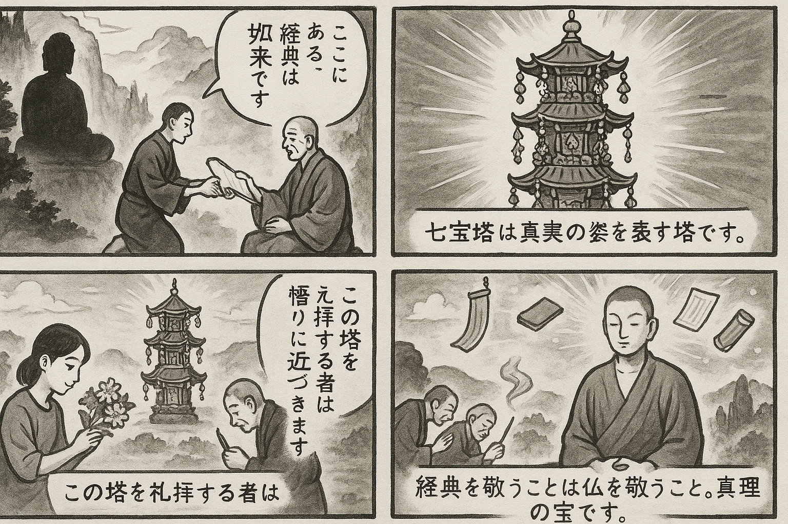

七十五巻 巻一覧
正法眼藏第65 如來全身
本ページは各巻の紹介ページです。tools/gen_web_volumes.py が doc/正法眼蔵.txt から要点の短い抜粋を載せています（全文の引用ではありません）。
出典（原文）: https://shomonji.or.jp/zazen/doc/genzou.html
原文・現代語訳の全文は 全文ページを参照してください。
この巻の紹介（概要）
道元『正法眼蔵』七十五巻の第65篇「如來全身」です。禅籍・経典への引用や語の行間が重なりやすいので、一度ですべてを要約に還元しない読み方を推奨します。問答 Bot では巻スコープにこの題名を含めると応答が安定しやすいことがあります。
語彙の足場
- 題名語：巻題「如來全身」は、道元が本章で特に扱う論点の看板です。辞書義だけに固定せず、原文中の用例で意味を確かめます。
- 引用と典故：公案・経文の引用は、一字一句の照応（何に答えているか）を押さえると全体が見えやすくなります。
- 学び方：抜粋だけでも音読し、分からない箇所は印を付けて後から問うとよいです。
原文（要点の抜粋）
当巻の冒頭付近からの短い抜粋です。長い引用は載せていません。全文は全文ページを参照してください。出典はリポジトリ内 doc/正法眼蔵.txt です。原文の参照元: https://shomonji.or.jp/zazen/doc/genzou.html
爾時、釋迦牟尼佛、住王舍城耆闍崛山、告藥王菩薩摩訶薩言、藥王、在在處處、若説若讀、若誦若書、若經卷所住之處、皆應起七寶塔、極令高廣嚴飾。不須復安舍利、所以者何。此中已有如來全身、此塔應以一切華香瓔珞、繒蓋幢幡、妓樂歌頌、供養恭敬、尊重讃歎。若有人得見此塔、禮拜供養、當知、是等皆近阿耨多羅三藐三菩提（爾の時に釋迦牟尼佛、王舍城耆闍崛山に住したまひ、藥王菩薩摩訶薩に告げて言はく、藥王、在在處處に、若しは説き若しは讀み、若しは誦し若しは書し、若しは經卷所住の處には、皆應に七寶の塔を起て、極めて高廣嚴飾ならしむべし。須らく復舍利を安くべからず、所以は者何。此の中に已に如來の全身有り、此の塔は應に一切の華香瓔珞、繒蓋幢幡、妓樂歌頌をもて供養し恭敬し、尊重し讃歎すべし。若し人有つて此の塔を見ることを得て、禮拜供養せば、當に知るべし、是等は皆阿耨多羅三藐三菩提に近づけりといふことを）。
いはゆる經卷は、若説これなり、若讀これなり、若誦これなり、若書これなり。經卷は實相これなり。應起七寶塔は、實相を塔といふ。極令の高廣、その量かならず實相量なり。此中已有如來全身は、經卷これ全身なり。
しかあれば、若説若讀、若誦若書等、これ如來全身なり。一切の華香瓔珞、繒蓋幢幡、妓樂歌頌をもて供養恭敬、尊重讃歎すべし。あるいは天華天香、天繒蓋等なり。みなこれ實相なり。あるいは人中上華上香、名衣名服なり。これらみな實相なり。供養恭敬、これ實相なり。起塔すべし。
不須復安舍利といふ、しりぬ、經卷はこれ如來舍利なり、如來全身なりといふことを。まさしく佛口の金言、これを見聞するよりもすぎたる大功徳あるべからず。いそぎて功をつみ、徳をかさぬべし。もし人ありて、この塔を禮拜供養するは、まさにしるべし、皆近阿耨多羅三藐三菩提なり。この塔をみんとき、この塔を誠心に禮拜供養すべし。すなはち阿耨多羅三藐三菩提に皆近ならん。近は、さりて近なるにあらず、きたりて近なるにあらず。阿耨多羅三藐三菩提を皆近といふなり。而今われら受持讀誦、解説書寫をみる、得見此塔なり。よろこぶべし、皆近阿耨多羅三藐三菩提なり。
しかあれば、經卷は如來全身なり、經卷を禮拜するは如來を禮拜したてまつるなり。經卷にあふたてまつるは如來にまみえたてまつるなり。經卷は如來舍利なり。かくのごとくなるゆゑに、舍利は此經なるべし。たとひ經卷はこれ舍利なりとしるといふとも、舍利はこれ經卷なりとしらずは、いまだ佛道にあらず。而今の諸法實相は經卷なり。人間天上、海中虛空、此土他界、みなこれ實相なり。經卷なり、舍利なり。舍利を受持讀誦、解説書寫して開悟すべし、これ或從經卷なり。古佛舍利あり、今佛舍利あり。辟支佛舍利あり、轉輪王舍利あり、獅子舍利あり。あるいは木佛舍利あり、繪佛舍利あり、あるいは人舍利あり。現在大宋國諸代の佛祖、いきたるとき舍利を現出せしむるあり。闍維ののち舍利を生ぜる、おほくあり。これみな經卷なり。
釋迦牟尼佛告大衆言、我本行菩薩道、所成壽命、今猶未盡、復倍上數（我れ本より菩薩道を行じて、成る所の壽命、今なほ未だ盡きず、復た上の數に倍せり）。
いま八斛四斗の舍利は、なほこれ佛壽なり。本行菩薩道の壽命は、三千大千世界のみにあらず、そこばくなるべし。これ如來全身なり、これ經卷なり。
智積菩薩いはく、我見釋迦如來、於無量劫、難行苦行、積功累徳、求菩薩道、未曾止息。觀三千大千世界、乃至無有如芥子許、非是菩薩捨身命處。然後乃得爲衆生故、成菩提道（我れ釋迦如來を見たてまつるに、無量劫に於て、難行苦行し、積功累徳して、菩薩道を求め、未だ曾て止息したまはず。三千大千世界を觀るに、乃至芥子の如き許りも是れ菩薩捨身命の處に非ざること有ること無し。然して後乃ち衆生の爲の故に、菩提道を成ることを得たまへり）。
はかりしりぬ、この三千大千世界は、赤心一片なり、虛空一隻なり。如來全身なり。捨未捨にかかはるべからず。舍利は佛前佛後にあらず、佛とならべるにあらず。無量劫の難行苦行は、佛胎佛腹の活計消息なり、佛皮肉骨髓なり。すでに未曾止息といふ、佛にいたりてもいよいよ精進なり。大千界に化してもなほすすむるなり。全身の活計かくのごとし。
正法眼藏如來全身第六十五
爾時寛元二年甲辰二月十五日在越州吉田縣吉峰精舍示衆
弘安二年六月廿三日在永平禪寺衆寮書寫之
図解（4コマ・AI生成）
教義の根拠は原文・出典に従い、漫画は比喩の補助に留めてください。

深掘り（読解のコツ）
- 道元文は定義の羅列に見えても、多くの場合誤解への遮断と正伝の姿勢が背骨になっています。
- 「当体」「現成」「即」などの語が出たら、その巻独自の差別相にどう接続しているかをメモしておくとよいです。